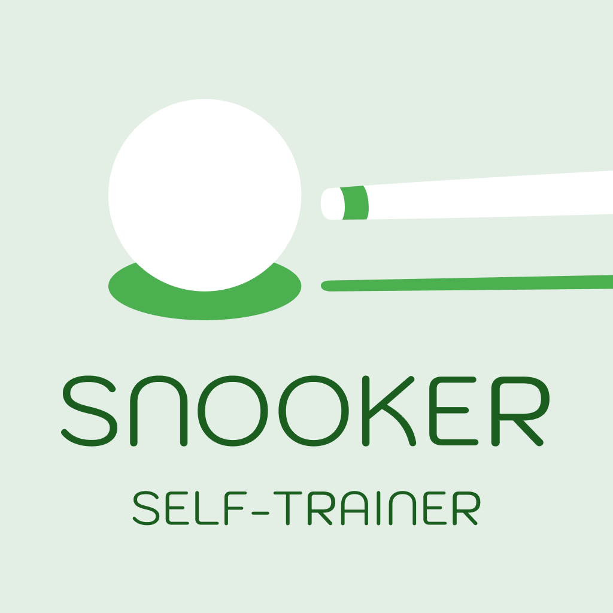
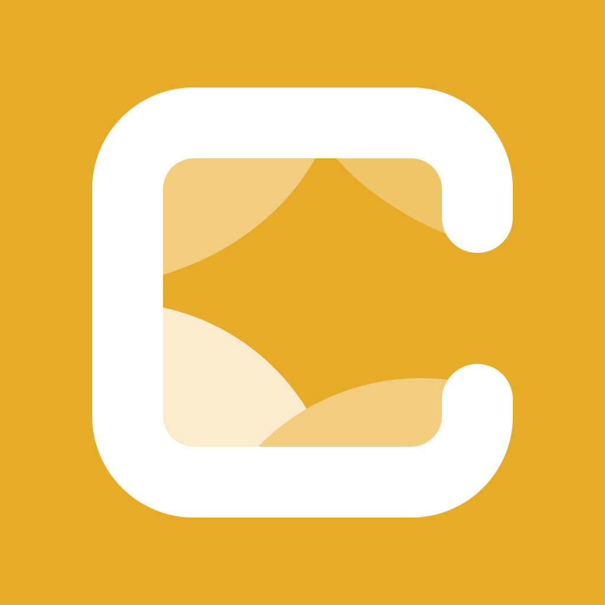

What I've Built
See what I've shipped—from AI-powered apps to training tools.

Snooker Self-Trainer
A comprehensive snooker training assistant app designed to help players improve their skills through structured drills and personalized plans.
View details →Pool & Billiards Self-Trainer
A comprehensive pool and billiards training assistant app built on proven architecture.
View details →Bible Project
An innovative Bible reader app with AI-powered verse explanations and smooth UX.
View details →
Calmly News
A calmer way to know the world. Stay informed without the addiction—AI-powered news app designed to help you get off your phone.
View details →